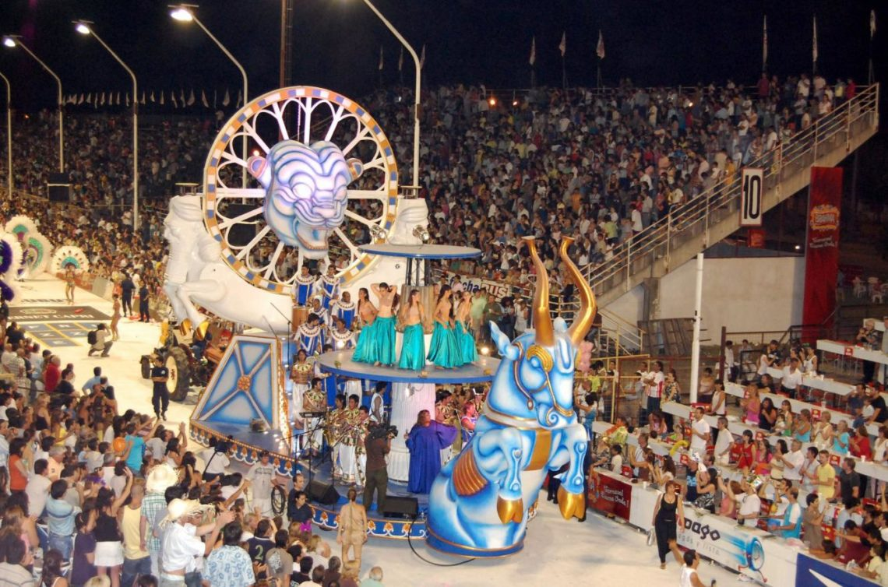

Somos un grupo de jovenes amigos y emprendedores que buscamos de una forma productiva alimentar el turismo y presumir nuestra ciudad hermosa en conjunto con sus llamativos eventos, lugares y espacios publicos. A solo 2 horas y media de la capital del pais, en la provincia de Entre Rios, se encuentra Gualeguaychú con el carnaval del pais
Proximos eventos
Veni a Gualeguaychú
Gualeguaychú una hermosa ciudad turistica a tan solo dos horas y media de viaje desde la Ciudad Autonoma de Buenos Aires. Aqui podras disfrutar las mejores fiestas tematicas, playas municipales y del famoso carnaval de pais. DESCRIPCION DEL ARTICLE ualeguaychú una hermosa ciudad turistica a tan solo dos horas y media de viaje desde la Ciudad Autonoma de Buenos Aires. Aqui podras disfrutar las mejores fiestas tematicas, playas municipales y del famoso carnaval de pais. DESCRIPCION DEL ARTICLE ualeguaychú una hermosa ciudad turistica a tan solo dos horas y media de viaje desde la Ciudad Autonoma de Buenos Aires. Aqui podras disfrutar las mejores fiestas tematicas, playas municipales y del famoso carnaval de pais. DESCRIPCION DEL ARTICLE
Hernan Cattaneo - sunsetstrip
Turevents presenta a Hernan Cattaneo en el famoso hipodromo de Gualeguaychú. Presentandose por primera vez en la provincia y siguiendo con su maravilloso formato sunsetstrip Turevents presenta a Hernan Cattaneo en el famoso hipodromo de Gualeguaychú. DESCRIPCION DEL ARTICLE urevents presenta a Hernan Cattaneo en el famoso hipodromo de Gualeguaychú. Presentandose por primera vez en la provincia y siguiendo con su maravilloso formato sunsetstrip Turevents presenta a Hernan Cattaneo en el famoso hipodromo de Gualeguaychú. DESCRIPCION DEL ARTICLE urevents presenta a Hernan Cattaneo en el famoso hipodromo de Gualeguaychú. Presentandose por primera vez en la provincia y siguiendo con su maravilloso formato sunsetstrip Turevents presenta a Hernan Cattaneo en el famoso hipodromo de Gualeguaychú. DESCRIPCION DEL ARTICLE
Veni al carnaval del pais

Veni a conocer el carnaval mas famoso del pais, con una pasarela de 500 metros y capacidad para 35.000 personas. Participaran las 5 comparsas, incluyendo la mas amada, Mari Mari. Veni a conocer el carnaval mas famoso del pais. DESCRIPCION DEL ARTICLE Veni a conocer el carnaval mas famoso del pais, con una pasarela de 500 metros y capacidad para 35.000 personas. Participaran las 5 comparsas, incluyendo la mas amada, Mari Mari. Veni a conocer el carnaval mas famoso del pais. DESCRIPCION DEL ARTICLE Veni a conocer el carnaval mas famoso del pais, con una pasarela de 500 metros y capacidad para 35.000 personas. Participaran las 5 comparsas, incluyendo la mas amada, Mari Mari. Veni a conocer el carnaval mas famoso del pais. DESCRIPCION DEL ARTICLE